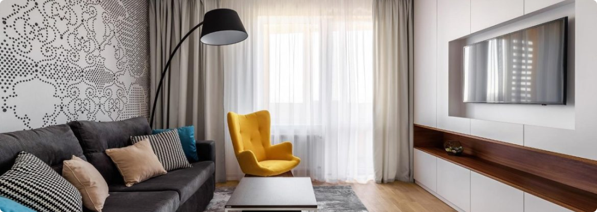

Decoration of the living room. Which upholstered furniture is better to choose?
The living room is the main room in every house. It is used for receiving guests, spending time with the whole family and just relaxing in a pleasant warm atmosphere. When decorating their home and the living room in particular, everyone tries to make it as convenient, comfortable and beautiful as possible. The main and central element of the design of the living room, like any other room, is upholstered furniture.
Any furniture for the living room should be not only stylish and beautiful, but also functional. It should be comfortable and pleasant to relax and receive guests on such furniture. However, today there is a huge variety of a wide variety of upholstered furniture for the living room, which is suitable for rooms of different sizes and shapes. What should you choose? What is the best way to decorate your living room so that you are comfortable and guests want to come to you again and again?
On the website of the Crovato online store, a wide variety of soft furniture for the living room is presented, among which everyone can choose the best option for himself. Here you will find:
- Straight sofas. Such sofas are considered classics. They are suitable for living rooms of any shape and size. A straight sofa looks stylish and concise, it is convenient to relax, receive guests or even sleep on it. Straight sofas can stand near the wall or in the center of the room. Many models of straight sofas are easily folded out, turning into a full-fledged sleeping place. Also, most sofas have large and roomy niches, which are additional storage space;
- Corner sofas Corner sofas are considered the most convenient and comfortable. They are ideal for spending time with family or friends. Corner sofas are mainly used for decorating large living rooms, as they take up a lot of space, and are simply not suitable for rooms with a small area;
- Тахти. Тахта - це одна з варіацій дивана, але стильніша і мінімалістична. Виглядають тахти дуже незвично і можуть підійти для будь-якого інтер'єру. Також тахти більше ніж звичайні дивани підходять для сну, оскільки в їх основі не пружинні блоки, а дерев'яні ламелі або ортопедичні матраци;
- Armchairs A sofa is one of the variations of a sofa, but it is more stylish and minimalistic. The ottomans look very unusual and can be suitable for any interior. Also, ottomans are more suitable for sleeping than ordinary sofas, since they are not based on spring blocks, but on wooden slats or orthopedic mattresses;
- A set of furniture. A set of upholstered furniture is an excellent solution for those who want to furnish their living room not only with a sofa, but also with armchairs. There are sets with one or two armchairs, with straight or corner sofas. The main advantage of any ready-made furniture set is that the pieces of furniture in it are perfectly combined with each other, and you will not need to spend your time and energy on their selection.
Choosing upholstered furniture for the living room is not an easy task. However, when choosing and buying furniture for your living room, remember that quality upholstered furniture should be not only beautiful, but also comfortable for you and all the residents of your house.